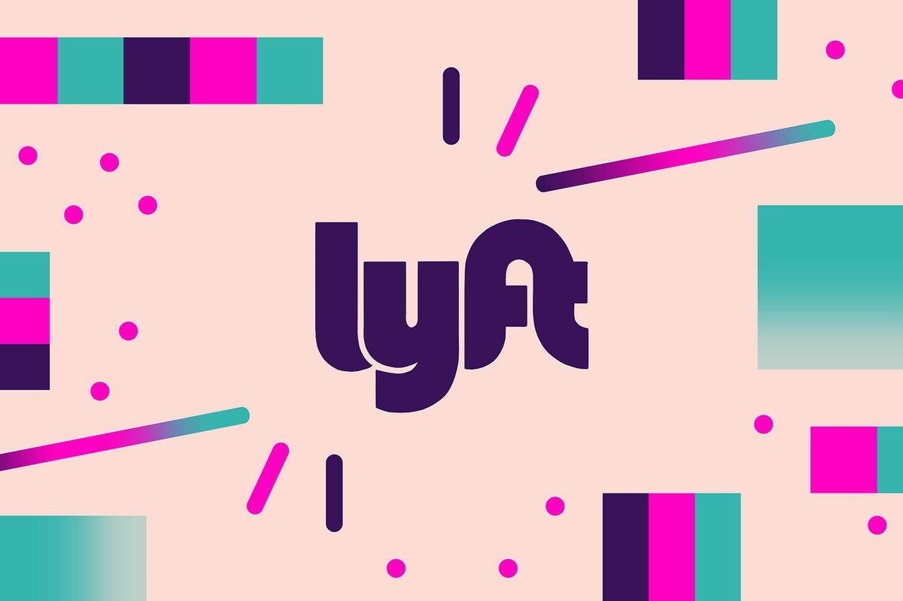
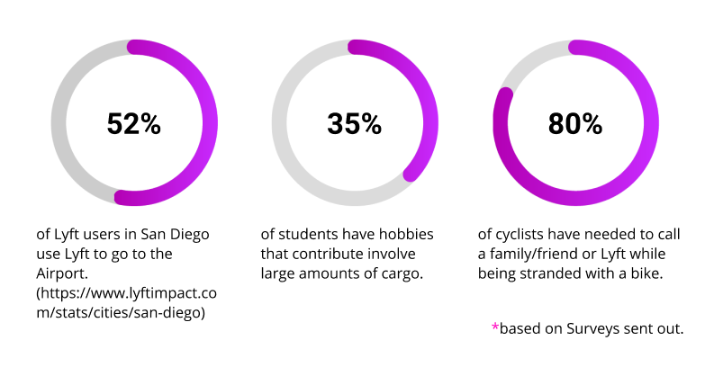
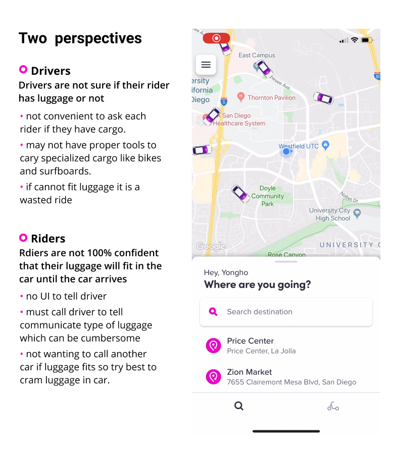
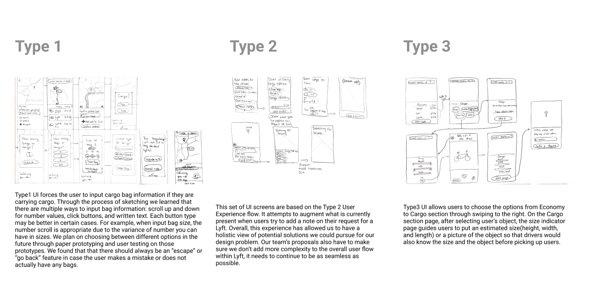
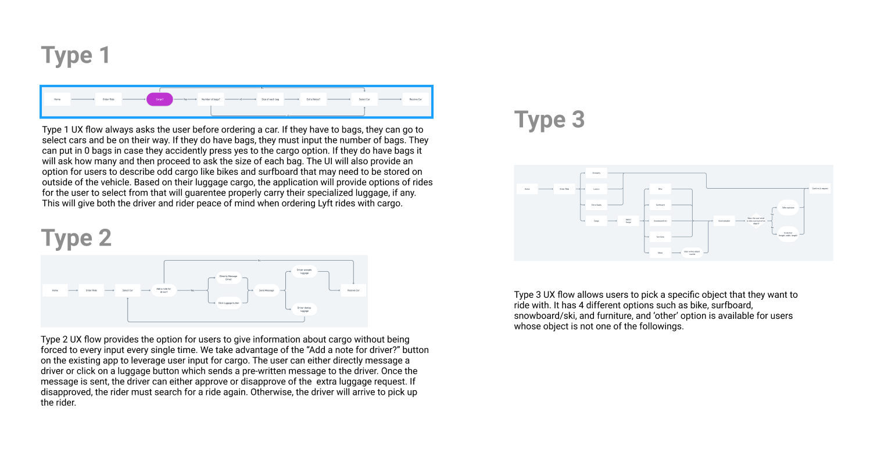
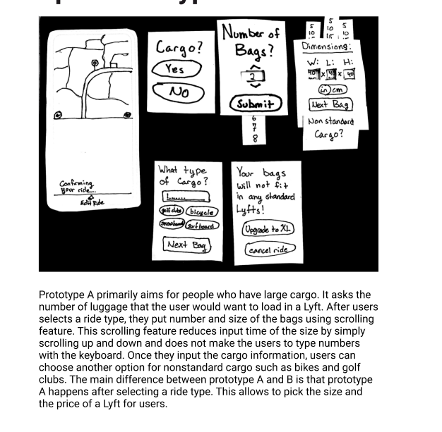
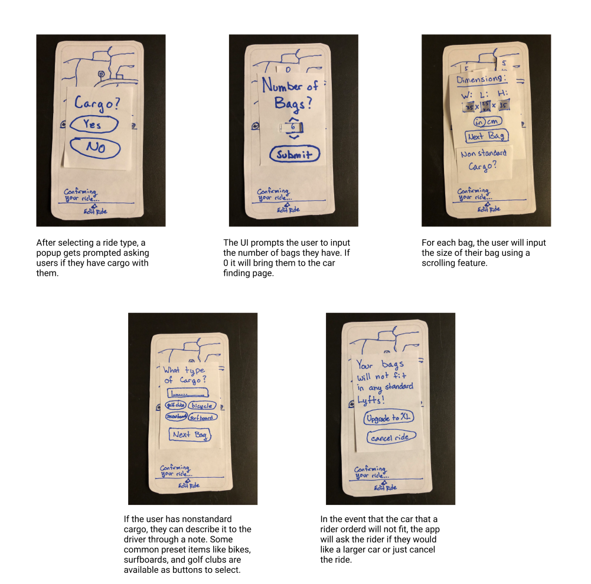
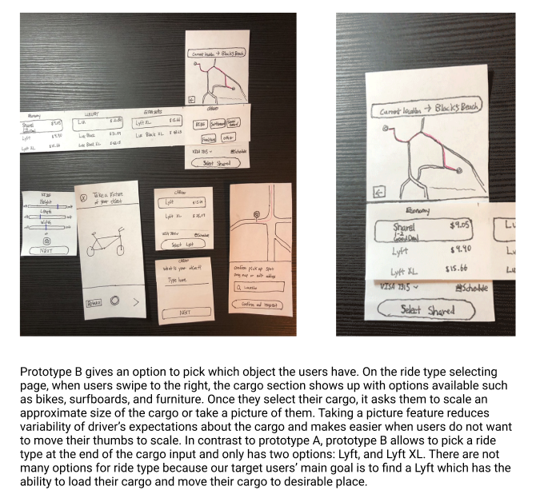
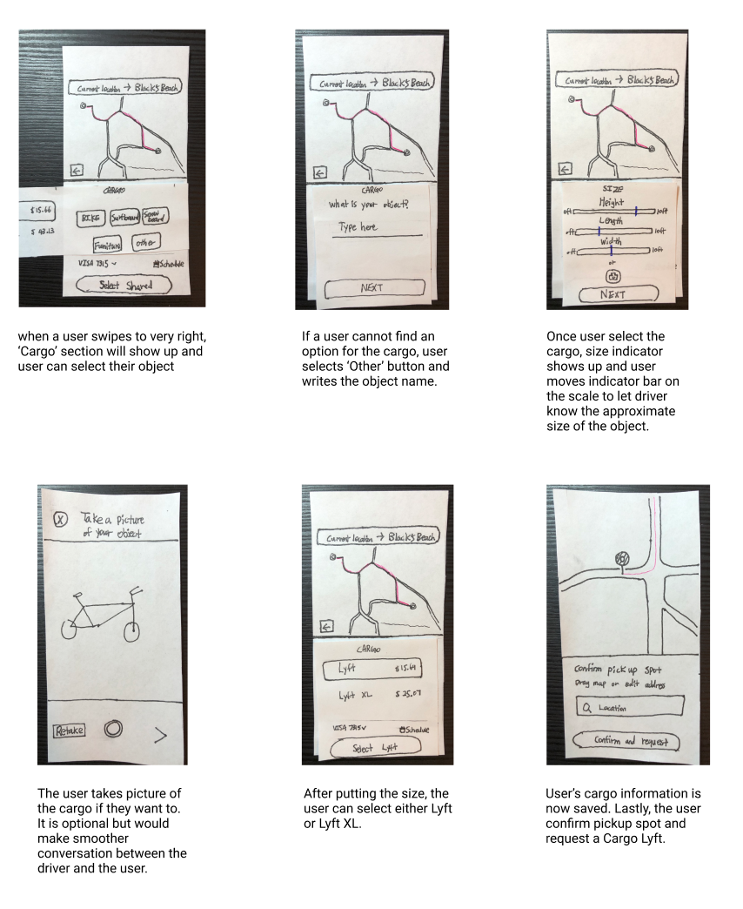
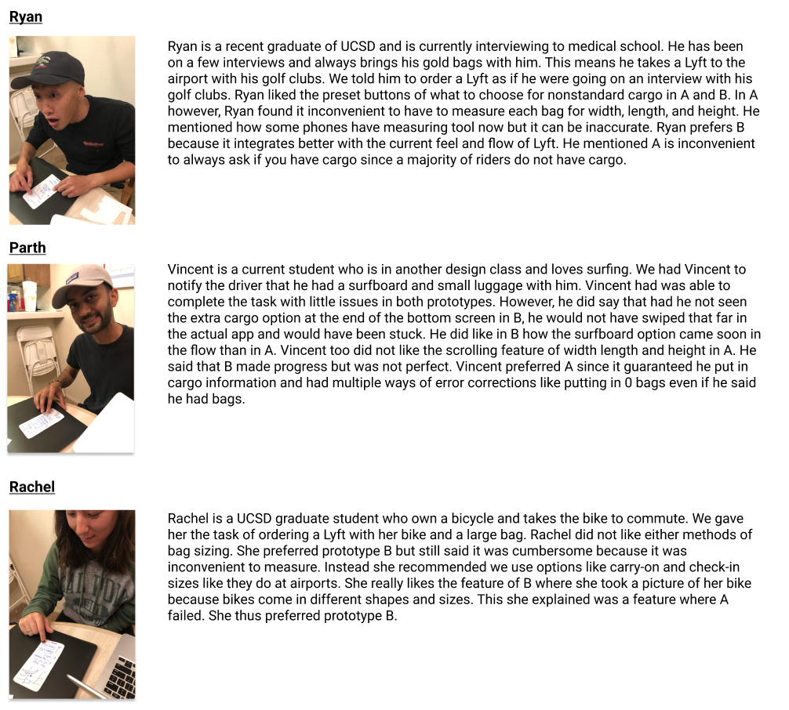

Hi, my name is Henry, and my team and I took a look at how to make Lyft fit the needs for more people.
From the very start of this case study, the team and I focused on finding appropriate ways to better accommodate the needs for rideshare users. In comparing Uber and Lyft, we immediately observed that Uber had already provided much more resources and rider options, whereas Lyft was clearly lacking those features for their users. This motivated the team to shift our focus on extending features to offer more options for their riders to remain competitive with Uber. Throughout our process, everyone had a chance to do a bit of everything, but I found myself gravitating more towards synthesizing and interpreting the data gathered from our test sessions. Overall, our team was able to come up with a feature set that can augment the overall user experience for Lyft’s customers.
We started at looking at some current pain points using Lyft’s service. The company claims that their “standard car (has) four seats all to yourself, and all the trunk space you need for your groceries or your luggage.” (https://www.lyft.com/rider) How does a Lyft driver know what riders are carrying and can guarantee that it will fit? How can a rider confidently know that a standard lyft will fit their luggage without having to order a larger, more expensive, ride? We defined the primary goal for the project: Our design goal was to extend Lyft’s user flow to accommodate riders with large or sensitive items, and to prepare drivers to anticipate those needs. The team then moved to establish that our target users would be avid travelers and those whose hobbies require large gear and their Lyft drivers.
Goals:
We realized that we needed to quantify and qualify the
amount of trouble riders had with placing cargo into Lyft.
So we conducted interviews, sent out surveys online, and referred
to Lyft’s user data to continue to validate our design solution.
These different methods were enough to capture relevant data for
our team to continue with our process.
Findings:

From the surveys we sent out online, we gathered that at least half of
Lyft riders in San Diego use Lyft to commute to and from the airport.
At least 25% of students engage in active hobbies that require larger
equipment, and more than 3 out of 4 cyclists needed to call a family
friend because of a bike malfunction.

From casual conversations with Lyft drivers, our team also discovered
that drivers are not sure if their rider has luggage or not, while some
riders reported that they were not 100% confident that their luggage
could fit into their rides. This happens because Lyft lacks the tools
to convey this critical information between riders and drivers.
How can we help riders be able to confidently order vehicles with the proper ability to carry their cargo? How can we help drivers be accurately aware of their riders’ cargo and be confident they can transport cargo without damage to their vehicle?
We started by sketching out and comparing our various ideas for the direction of the project.
After some deliberation, we agreed on the following ideas we would continue to persue.
We looked at the user data that our team gathered, in addition to some of our preliminary sketches. We produced AB paper prototypes that we thought were sufficient enough for a user test session with our prototypes.
Paper Prototype A
 Paper Prototype B
 We collected feedback on our AB prototypes

After conducting a user test session, we found that people liked the pop
up screens of asking number of bags in prototype A. People who have a
large cargo can request a lyft with fast action
of pressing a few buttons. Also, prototype A takes many inputs from the
user about the object so that the driver can easily know what the driver
is going to load in the car. However, people felt inconvenient because
there are many steps to go through in order to request a Lyft. In
contrast, people liked the feature of selecting an object option in the
beginning of prototype B because people can pick their object faster than
prototype A. Also people like the general flow of prototype B and we
believe this is because of the simple steps of putting an object name
and size with the option of normal Lyft and XL. Even though people like
the idea of putting the cargo size, they did not prefer the size bar and
scroll features in both prototype A and B. Our team made these features
for the drivers but realized that it could be asking too much for the
users when they simply want to order a Lyft with a big trunk or a rack.
In addition, when people choose the option for taking a picture of the
object, they were concerned about the size of the object picture because
it might look different in the picture and the driver could misunderstand
of the object size.
With this all in mind, our team moved to creating higher fidelity
prototypes.
This higher fidelity mockup was heavily based on our Type 3 Flow and
Paper Prototype B. We included 2 alternative screens to offer people
during our next user testing session.
Our following user testing session revealed the following:
Interviewee 1 is a fourth year student at UCSD and barely uses Lyft.
He liked the flow of choosing cargo option from swiping to the right.
One thing that he was a little confused about was the color of the
illustrated cars being green. He mentioned that green color does not
match with the overall Lyft brand. Otherwise, he liked the addition
of ‘other’ option on the bottom of the cargo options. He also said
that the previous screen had only the scale bar with no number on it
and the final of the size screen is much better because it now has the
range and choices of inches and centimeters of the size with optional
pictures.
Interviewee 2 is a UCSD working recent alum who is a frequent user of
Lyft for travel. He liked the “Common Cargo” screen with pictures of
cars because it was meaningful to see how cargo could fit on the Lyft
vehicle. He also liked how items shown were specialized to what cargo
he was likely to bring based on past rides. However, they did not
understand why this screen did not have the “Others” option and
mentioned he did not think another button for this would crowd the
screen. Thus, we added the “Others” section to this screen adding
functionality.
Interviewee 3 is also a working recent UCSD alum, and often uses
Lyft on the weekends. She liked the team’s first iteration of the
prototype overall. However, she did not like the original second
screen, which lacked any visual aids to help conceptually picture the
type of car that would be requested. The first alternate screen was a
much better fit in that regard. The screen that specified the “Other
Cargo” category was intuitive for her to understand at a first glance
as well. The screen that asks the user to specify the cargo size felt
too ambiguous to her at first, mostly because there weren’t any more
specific indications as to what exact measurements that the sliders
would be creating. The photo feature was a better alternative as
opposed to using the siders.
We also considered feedback about our “Size Selection” screen from
our TA. They mentioned how the scroll bars had no reference as to what
high or low on the bar actually meant in reality. To add more clarity
we added a numeric scale to our bars as well as a conversion switch in
the corner to control units of measurement. We also added common
luggage size buttons like “Carry On” and “Check In” which snap scroll
bars into a default size. Thus users can have a reference point to
measure their luggage with. We wanted to have a balance of accuracy and
clarity without being too strict and demanding for the user when
measuring cargo. In addition, we decided to have the camera be an
optional addition to the measuring scroll bars instead of a “this OR
that” feature. We thought the photo alone did not have too much value
alone, but coupled with the sizing feature had more of a purpose so
the driver knows exactly what they are picking up.
With all of this in mind, we iterated our high fidelity to look as such:
As an added bonus, we included some before and after screens from our earlier high fidelity prototype to the most current that fit the needs of the users that we tested.
Overall, the team managed to design a new feature set that would create meaningful value to Lyft’s customers. Designing for a problem in this context gave us valuable experience as to how a more established organization can have their products improved even more over time. Throughout the process, the team remained focused on our goals and ensuring that we do not add unnecessary information in the overall user experience flow. It would be no suprise to be if Lyft eventually integrated this feature into their product, since they must remain competative with Uber.